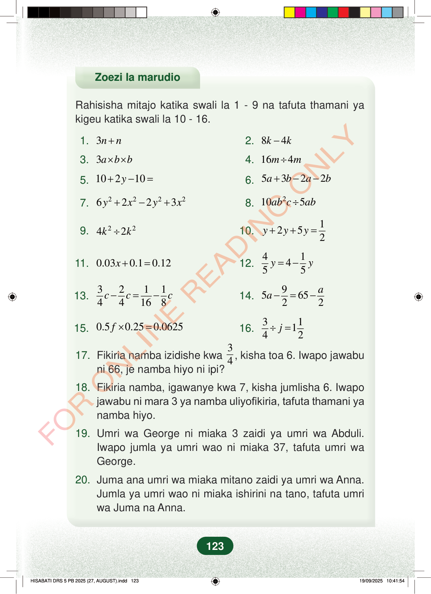

Zoezi la marudioRahisisha mitajo katika swali la 1 - 9 na tafuta thamani yakigeu katika swali la 10 - 16.1.3nn+2.84kk−3.3abb××4.164mm÷5.10210y+−=6.5322abab+−−7.22226223yxyx+−+8.2105abcab÷9.2242kk÷10.1252yyy++=11.0.030.10.12x+=12.41455yy=−13.321144168ccc−=−14.956522aa−=−15.0.50.250.0625f×=16.31142j÷=17.Fikiria namba izidishe kwa34, kisha toa 6. Iwapo jawabuni 66, je namba hiyo ni ipi?18.Fikiria namba, igawanye kwa 7, kisha jumlisha 6. Iwapojawabu ni mara 3 ya namba uliyofikiria, tafuta thamani yanamba hiyo.19.Umri wa George ni miaka 3 zaidi ya umri wa Abduli.Iwapo jumla ya umri wao ni miaka 37, tafuta umri waGeorge.20.Juma ana umri wa miaka mitano zaidi ya umri wa Anna.Jumla ya umri wao ni miaka ishirini na tano, tafuta umriwa Juma na Anna.123
Zoezi la marudio
Rahisisha mitajo katika swali la 1 - 9 na tafuta thamani ya kigeu katika swali la 10 - 16.
1. 3 n n + 2. 8 4 k k −
3. 3 a b b × × 4. 16 4 m m ÷
5. 10 2 10 y + − = 6. 5 3 2 2 a b a b + − −
7. 2 2 2 2 6 2 2 3 y x y x + − + 8. 2 10 5 ab c ab ÷
9. 2 2 4 2 k k ÷ 10. 1 2 5 2 y y y + + =
11. 0.03 0.1 0.12 x + = 12. 4 1 4 5 5 y y = −
13. 3 2 1 1 4 4 16 8 c c c − = − 14. 9 5 65 2 2 a a − = −
15. 0.5 0.25 0.0625 f × = 16. 3 1 1 4 2 j ÷ =
17. Fikiria namba izidishe kwa 3 4 , kisha toa 6. Iwapo jawabu ni 66, je namba hiyo ni ipi?
18. Fikiria namba, igawanye kwa 7, kisha jumlisha 6. Iwapo jawabu ni mara 3 ya namba uliyofikiria, tafuta thamani ya namba hiyo.
19. Umri wa George ni miaka 3 zaidi ya umri wa Abduli. Iwapo jumla ya umri wao ni miaka 37, tafuta umri wa George.
20. Juma ana umri wa miaka mitano zaidi ya umri wa Anna. Jumla ya umri wao ni miaka ishirini na tano, tafuta umri wa Juma na Anna.
123
Zoezi la marudioRahisisha mitajo katika swali la 1 - 9 na tafuta thamani ya kigeu katika swali la 10 - 16.1.3n + n2.8k - 4k3.<math><mrow><mn>3</mn><mi>a</mi><mo>×</mo><mi>b</mi><mo>×</mo><mi>b</mi></mrow></math>4.<math><mrow><mn>16</mn><mi>m</mi><mo>÷</mo><mn>4</mn><mi>m</mi></mrow></math>5.10 + 2y - 10 =6.5a + 3b - 2a - 2b7.<math><mrow><mn>6</mn><msup><mi>y</mi><mn class="tml-sml-pad">2</mn></msup><mo>+</mo><mn>2</mn><msup><mi>x</mi><mn class="tml-sml-pad">2</mn></msup><mo>−</mo><mn>2</mn><msup><mi>y</mi><mn class="tml-sml-pad">2</mn></msup><mo>+</mo><mn>3</mn><msup><mi>x</mi><mn class="tml-sml-pad">2</mn></msup></mrow></math>8.<math><mrow><mn>10</mn><mi>a</mi><msup><mi>b</mi><mn>2</mn></msup><mi>c</mi><mo>÷</mo><mn>5</mn><mi>a</mi><mi>b</mi></mrow></math>9.<math><mrow><mn>4</mn><msup><mi>k</mi><mn>2</mn></msup><mo>÷</mo><mn>2</mn><msup><mi>k</mi><mn>2</mn></msup></mrow></math>10.<math><mrow><mi>y</mi><mo>+</mo><mn>2</mn><mi>y</mi><mo>+</mo><mn>5</mn><mi>y</mi><mo>=</mo><mfrac><mn>1</mn><mn>2</mn></mfrac></mrow></math>11.0.03x + 0.1 = 0.1212.<math><mrow><mfrac><mn>4</mn><mn>5</mn></mfrac><mi>y</mi><mo>=</mo><mn>4</mn><mo>−</mo><mfrac><mn>1</mn><mn>5</mn></mfrac><mi>y</mi></mrow></math>13.<math><mrow><mfrac><mn>3</mn><mn>4</mn></mfrac><mi>c</mi><mo>−</mo><mfrac><mn>2</mn><mn>4</mn></mfrac><mi>c</mi><mo>=</mo><mfrac><mn>1</mn><mn>16</mn></mfrac><mo>−</mo><mfrac><mn>1</mn><mn>8</mn></mfrac><mi>c</mi></mrow></math>14.<math><mrow><mn>5</mn><mi>a</mi><mo>−</mo><mfrac><mn>9</mn><mn>2</mn></mfrac><mo>=</mo><mn>65</mn><mo>−</mo><mfrac><mi>a</mi><mn>2</mn></mfrac></mrow></math>15.<math><mrow><mn>0.5</mn><mi>f</mi><mo>×</mo><mn>0.25</mn><mo>=</mo><mn>0.0625</mn></mrow></math>16.<math><mrow><mfrac><mn>3</mn><mn>4</mn></mfrac><mo>÷</mo><mi>j</mi><mo>=</mo><mn>1</mn><mfrac><mn>1</mn><mn>2</mn></mfrac></mrow></math>17.Fikiria namba izidishe kwa 3/4, kisha toa 6.Iwapo jawabu ni 66, je namba hiyo ni ipi?18.Fikiria namba, igawanye kwa 7, kisha jumlisha 6.Iwapo jawabu ni mara 3 ya namba uliyofikiria, tafuta thamani ya namba hiyo.19.Umri wa George ni miaka 3 zaidi ya umri wa Abduli.Iwapo jumla ya umri wao ni miaka 37, tafuta umri wa George.20.Juma ana umri wa miaka mitano zaidi ya umri wa Anna.Jumla ya umri wao ni miaka ishirini na tano, tafuta umri wa Juma na Anna.